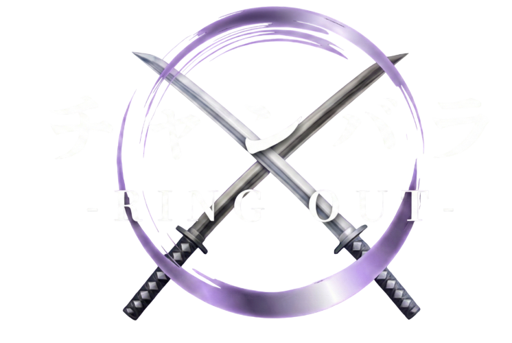

相手を土俵の外へ押し出すと1本。先に2本取った方の勝ち。音が出ます。
▶ 遊び方の動画を見る（42秒）この Web 版は、スマホ1台で楽しめるように作り変えたものです。本来の作品は、Arduino と6軸センサで作った剣型コントローラーを PC につなぎ、PC どうしをサーバーで連携させて2人で対戦するゲームです。
① 画面の向きを縦に固定します（回転ロックをオン）。
② スマホを縦に持ち、左右に傾けて、下の赤い剣が同じ向きに動くか確かめます。逆に動くときは「傾きの左右を反転」を押します。
0° → U
「世界をまっすぐ保つ」：スマホを傾けても、画面の中の土俵は地面に対して水平のまま見えます。
「剣だけ傾く」：画面は回さず、あなたの剣だけがスマホの傾きに合わせて傾きます。
構えが相手の剣と平行なほど大きく押し出せ、直角に交わると防がれます。
このゲームは、スマホの傾きと振りを使って遊びます。スマホのブラウザで、次のアドレスを開いてください。